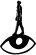

Bienal de Artes
Mediales de Santiago

edición
año
14º El cuarto mundo
2019

La convergencia entre artes, ciencias y tecnología, entre naturaleza, ciudad, ideas, palabras y acción colectiva, conforma el campo de exploraciones de «El cuarto mundo», la 14 Bienal de Artes Mediales de Santiago. Buscamos desenvolver estrategias de adaptación y transformación ante un presente determinado por la integración de tecnologías digitales en buena parte de los procesos sociales, la infoxicación producida por la saturación mediática y la sobreexplotación de la naturaleza, hoy reducida a recursos y servicios.
Combinando las lógicas de la intuición, la creación, la precisión, el archivo y la conexión, queremos generar instrumentos de múltiples escalas y perspectivas con los que explorar la crisis e imaginar modos de adaptación y balance para trazar el camino de vuelta a la tierra. El título y curatoría de esta nueva edición está inspirado en la escultura «El cuarto mundo» del artista chileno Carlos Ortúzar (1935-1985), una obra instalada en 1972 en el patio del edificio destinado a la UNCTAD III (actual Edificio Villavicencio), en el que arte, ciencia y sociedad convergieron con potencia. La obra se erigió como una crítica frente a la distinción entre “primer, segundo y tercer mundo”, división que separaba al mundo en diferentes clases sociales, mientras que el concepto “cuarto mundo” se acuñaba para designar a la porción más marginada del orden desarrollista. El edificio de la UNCTAD III y las obras que ahí se instalaron representaron un intento por revertir ese orden. No obstante, al igual que esta utopía la obra desapareció tras del Golpe de Estado de 46 años despúes, gracias a la participación de la familia de Ortúzar y la maestranza JEMO, encargada de su fabricación original, se ha construido una nueva versión para ser restituida en el mismo sitio como hito inaugural de la 14 Bienal.